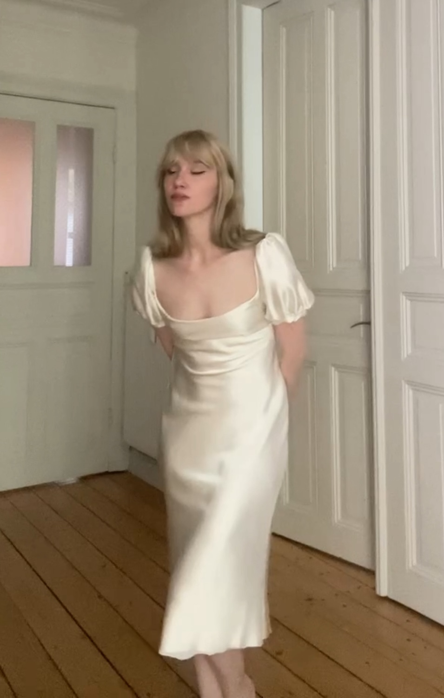

back
clouds, cream, seafoam, steamed milk, butter, moonlight
white ionic columns at the temple of artemis
years ago i made my first version of this dress, based on a design by john galliano for givenchy. experimentation with sleeves, materials, bust size, trims, and other details have produced different iterations of this dress.
details: empire waist, fabricated from a liquid silk satin charmeuse, gathered sleeves, fully lined, with a bias cut silk skirt that falls against the body like water
